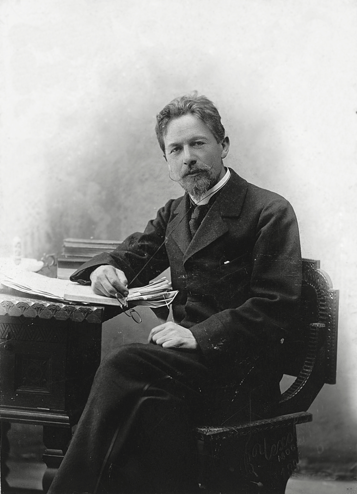

Антон Павлович Чехов – знаменитый русский писатель, драматург, выдающийся деятель, так же доктор по образованию.
Родился писатель в городе Таганроге 17(29) января 1860 года. Близкие родственники Антона Павловича исповедовали христианскую веру, поэтому часто Чехов на церковные праздники пел в приходском храме. Получил начальное образование частично на дому, частично в школе-гимназии. Потом учился в Московском Университете на медицинском факультете. Вследствие чего работал доктором в различных медицинских учреждениях.
Началом литературного пути стоит считать 1884 год, когда вышел его первый сборник «Сказки Мельпомены». В 90г 19 века Чехов совершил поездку на Сахалин, куда его отправили, потому что местные жители нуждались в медицинской помощи и в переписи населения. Написанные там произведения «Палата №6», «Остров Сахалин», «В ссылке», отражают переживания и чувства автора, испытанные во время поездки. На произведения А. П. Чехова оказало большое влияние творчество Л. Толстого. Свои первые произведения Чехов подписывал псевдонимами такими как: «Человек без селезенки», «Антоша Чехонте» и др. Считается, что он делал это, потому что боялся критики со стороны читателей. В поздние годы своей жизни Антон Павлович пишет в основном пьесы и пьески: «Вишневый сад», «Чайка», «Три сестры». Все его произведению всегда преследовали одну цель. Писатель хотел открыть читателям глаза на мир того времени и высмеять пороки многих высокопоставленных людей, которых считали идеальными. Многие произведения Чехова и по сей день ставятся в самых известных театрах мира. Интересно, что Антон Павлович Чехов является одним из самых известных авторов, пьесы которых ставились наибольшее количество раз во всем мире.
Немного спустя Чехов решает ехать в Петербург, где знакомится с Сувориным. Они отправляются в совместную поездку по Европе. Всего за пару тройку месяцев Антон Павлович посещает Венецию, Рим, Неаполь, Вену, Париж, Ниццу.
Но Чехов был не только писателем и драматургом. В 1892 – 1899 писатель покупает дом в имении Мелихово, где ведет активную благотворительную и общественную деятельность. Здесь он открывает школу для крестьянских детей, жертвует деньги на строительство дорог, занимается посадкой деревьев, принимает множество гостей. Он строит собственную библиотеку, которую сам же спонсирует и пополняет новыми экземплярами интересных книг, занимается возведением новой исследовательской обсерватории, помогает материально детским садам и школам.
Вследствие болезни, Чехов переезжает в Ялту. Там его навещают близкие друзья и знакомые А. Куприн, Л. Толстой, И. Бунин, М. Горький, И. Левитан.
Писатель в 1904 году едет в Германию, чтобы пройти курс лечения, но из-за обострения болезни, 2 июля он умирает.
Основные даты в жизни Чехова А.П
Творение
Журнал
рассказ «Спать хочется» напечатан в «Петербургской газете»